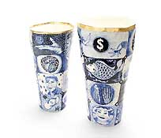
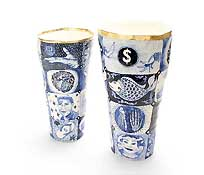
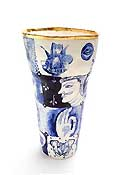

|
Vipoo Srivilasa
Thai ceramist resident in Australia
Lai Krarm: New Works by Vipoo Srivilasa. Article by Stephen
Benwell.
The collection of ceramic works that Vipoo Srivilasa has brought
together for this exhibition surprises with a barrage of visual
information. The artist describes, in a series of bowls and vases,
a tale of intimate occurrences, each one glimpsed briefly and then
left behind as a new thought is brought into focus. It is a spontaneous
narrative in which the images have been stored up for the last six
or seven years until they have suddenly flooded out. In these pots
are memories of an earlier life in Bangkok, his present life in
Australia and here and there, little invocations of a future life.
  
We sense in these works Vipoo’s excitement in exploring the
narrative possibilities of ceramics, a mode that has many precursors
but one that is sometimes avoided by practitioners. Descriptive
passages of daily life are apparent throughout the long history
of painting on ceramics and it is in this context that we should
place Vipoo’s work. He is a good storyteller – fluent,
opinionated, varied and flamboyant. He has a free-flowing and non-didactic
style that is just as insightful as any more theoretical analysis
of contemporary culture. These pots, when looked at together, form
a catalogue of minutiae, the sort of information that will be invaluable
to an archaeologist working to retrieve the past in some future
excavation.

How are we to interpret so many competing images? One way is to
take Vipoo’s lead and respect the divisions that separate
each painted segment. We are not meant to resolve his story into
a neat, harmonious whole. Instead we are made to feel, uncomfortably
at times, the difficulty of making sense of his story. As well,
the barricaded pictures are each protected from the influences that
threaten to displace each other. Buddhist iconography jostles with
emblems of Australian culture. Fashion models rub shoulders with
skeletons and vital organs. Consumer goods are compared to the timeless
motifs of Thai art. Each motif is offered uncritically and without
a hierarchical structure. Confusion reigns but even in this idea
we feel that Vipoo gives us a faithful recording of an imperfect,
disturbing and endlessly variable world.
Historical ironies abound in this work too. In the seventeenth
century, the artistry of East Asia was a revelation to the wealthy
connoisseurs of Europe. When the crates of imported porcelain were
unpacked in the warehouses of Amsterdam and London, a collecting
mania developed for the blue and white vases with their vistas of
dreamy mountains where scholars rested amidst an exquisite rendering
of nature. Vipoo’s vases recall this famous and influential
trade in ceramics. Sent from Australia whose role in East Asia continues
to be debated, his vases will be unpacked in Bangkok and exhibited
there. While the seventeenth century trade routes no longer prevail,
the art of blue and white porcelain continues to serve as exchange
between cultures, bringing to a curious audience in Bangkok some
vignettes of Australian life.
In
Vipoo’s work, blue and white porcelain emerges in a hybrid
form. By grafting his contemporary ceramic practice onto that grand
tradition, and juxtaposing emblems of Thai and Australian culture,
he reorientates its settled expectations. Aside from the contemporary
and historical contexts of these pots, there is the simple pleasure
that can be taken by looking into the rich indigo blue as it sinks
into the brittle white porcelain. Since its invention by Chinese
potters during the Yuan dynasty, blue and white porcelain has become
probably the best-loved and most ubiquitous genre of ceramics. In
Vipoo’s pots, the seemingly effortless magic of the materials
provides the artist with the means to release an outpouring of imagery.
He delves into a narrative style whose inventive scope strains at
the containing forms of vase, bottle and bowl.
Stephen Benwell is a ceramic artist living in Melbourne,
Australia. He is a PHD candidate at Monash University.
Lai Krarm: Thai word for porcelain with design in indigo blue. Lai
Krarm exhibited in Bangkok, Thailand in 2005. This article is part
of the exhibition catalogue. The artist's website: www.vipoo.com.
Vipoo is represented by Über Gallery, Melbourne www.ubergallery.com.
Images courtesy Vipoo Srivilasa.
© The Artist
More Featured Artists
More Articles |

{kind=link}
{kind=link}
{kind=link}
{kind=link}
{kind=link}
{kind=link}
{kind=link}
{kind=link}
{kind=link}
{kind=link}
{kind=link}
{kind=link}
{kind=link}
{kind=link}